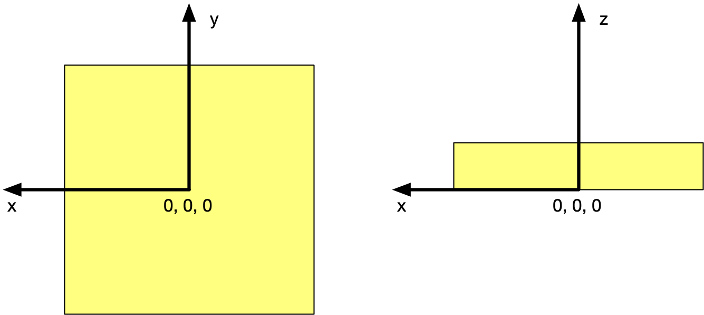

3.3.1.24. NXattenuator¶
Status:
base class, extends NXcomponent
Description:
A device that reduces the intensity of a beam by attenuation. ...
A device that reduces the intensity of a beam by attenuation.
If uncertain whether to use NXfilter (band-pass filter) or NXattenuator (reduces beam intensity), then choose NXattenuator.
Symbols:
No symbol table
- Groups cited:
Structure:
distance: (optional) NX_FLOAT {units=NX_LENGTH}
Distance from sample. Note, it is recommended to use NXtransformations instead.
type: (optional) NX_CHAR
Type or composition of attenuator, e.g. polythene
thickness: (optional) NX_FLOAT {units=NX_LENGTH}
Thickness of attenuator along beam direction
scattering_cross_section: (optional) NX_FLOAT {units=NX_CROSS_SECTION}
Scattering cross section (coherent+incoherent)
absorption_cross_section: (optional) NX_FLOAT {units=NX_CROSS_SECTION}
Absorption cross section
attenuator_transmission: (optional) NX_FLOAT {units=NX_DIMENSIONLESS}
The nominal amount of the beam that gets through ...
The nominal amount of the beam that gets through (transmitted intensity)/(incident intensity)
status: (optional) NX_CHAR
In or out or moving of the beam ...
In or out or moving of the beam
Any of these values:
in|out|moving@time: (optional) NX_DATE_TIME
time stamp for this observation
depends_on: (optional) NX_CHAR ⤆
The reference point of the attenuator is its center in the x and y axis. The r ...
The reference point of the attenuator is its center in the x and y axis. The reference point on the z axis is the surface of the attenuator pointing towards the source.
In complex (asymmetric) geometries an NXoff_geometry group can be used to provide an unambiguous reference.
shape: (optional) NXoff_geometry
Shape of this component. Particularly useful to define the origin for position and orientation in non-standard cases.
Hypertext Anchors¶
List of hypertext anchors for all groups, fields, attributes, and links defined in this class.


{kind=link}